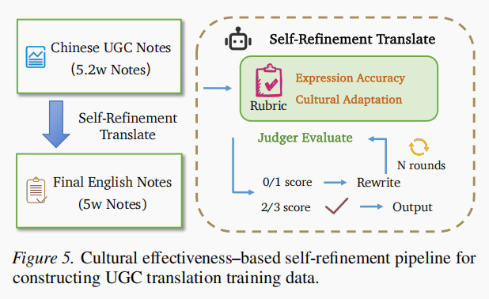

Beyond Literal Translation: Evaluating Cultural Effectiveness in Social Media UGC
论文信息：Linjuan Wu, Ruiqi Zhang et al., 浙江大学 / 小红书 Inc. / 复旦大学，ICML 2026（PMLR 306），arXiv:2605.25626v1 (2026.05)。 论文原文 | 数据集地址 提出 CULTURE-MT——一个聚焦社交媒体 UGC 翻译中"文化传递 (CULtural Transmission)"与"UGC 情感共鸣 (Emotion REsonance)"的基准，并提出"文化有效性 (Cultural Effectiveness)"作为新评估准则。
1. 摘要 (Abstract)
- 背景与问题：社交媒体支撑大规模跨语言沟通，但翻译用户生成内容 (UGC) 仍困难——其风格非正式、含文化指涉与基于互动的表达。尽管近年的 LLM 提升了翻译质量，现有基准与指标往往无法衡量译文是否在真实场景中传达了本意与文化共鸣。
- 提出的方案 (CULTURE-MT)：一个同时关注文化传递与 UGC 情感共鸣的社交媒体翻译基准，包含 14 个领域、1,002 条 UGC 笔记，依据文化负载符号 (culture-loaded symbol) 与语言风格特征划分为 4 类；同时构建 UGC 导向训练数据，微调 Qwen3-8B / Qwen3-32B 作为基线。
- 新评估准则：提出 文化有效性 (Cultural Effectiveness)，聚焦表达准确度 (expression accuracy) 与文化适应性 (cultural adaptability)。
- 主要发现：测试 15 个模型后发现，传统指标无法捕捉文化有效性；文化有效性与基座 LLM 的规模呈正相关。最佳模型 (Gemini 3) 也仅 38.30% 的样本达到最高档文化有效翻译，8B 基线仅 28.24%，凸显基准难度。
- 开放资源：发布 CULTURE-MT 基准，并提供在线排行榜，提交的翻译结果可由训练好的 JUDGER 评估。
2. 引言 (Introduction)
- 动机：社交媒体 UGC 是人们探索不同生活方式/价值观/文化的重要方式，但线上社区仍被语言文化分割。平台虽集成了基于 LLM 的机器翻译 (MT)，但部署大/闭源 LLM 成本过高，平台翻译仍倾向字面化，无法捕捉非正式、上下文密集、文化特定的 UGC 细微含义。
- 现有基准的局限：Redtrans-Bench、Seed-X-Challenge、DITING-Corpus 等关注在线语言的文化挑战（幽默本地化、俚语、习语），但主要聚焦文化负载符号，忽视了 UGC 由社交互动塑造的独特语言风格——如用反问引发共鸣、用夸张语言吸引注意。翻译文化负载符号保证语义准确，翻译语言风格对唤起情感共鸣、维系互动至关重要，二者缺一不可。
- CULTURE-MT 的范围界定：中译英 UGC 笔记；限定为自包含、可纯文本评估的笔记——需大量图文证据、帖子线程历史或高度本地化外部语境的内容，留作未来的上下文/多模态评估场景。
- 三点贡献：
- 引入 CULTURE-MT——面向中英 UGC 翻译的挑战性基准，强调文化负载表达与社交媒体特定语言风格。
- 提出"文化有效性"新评估准则，兼顾翻译准确度与文化共鸣，弥补标准自动指标的局限。
- 通过 15 个模型的大规模评测，揭示模型规模与文化有效性的强相关，并发布 Qwen3-8B / Qwen3-32B 强基线。
3. 相关工作 (Related Work)
3.1 在线内容翻译基准 (Translation Benchmark for Online Content)
- RedTrans-Bench（与本文最相关）：评估 LLM 在社交媒体跨文化迁移上的表现，针对幽默本地化、emoji 语义、梗的改编，但范围有限，难以覆盖 UGC 多样的语言风格（夸张、反问等中文社媒核心表达）。
- TransBench：聚焦电商/法律/金融等专业领域，强调术语准确与文化细节，但文本正式结构化，与社媒 UGC 的非正式、碎片化形成鲜明对比，且尚未公开数据。
- DITING-Corpus：面向网文翻译，定义习语翻译、词汇歧义、文化安全等任务；但聚焦长篇叙事，而社媒帖子在短文内呈现多重挑战，需更整合的评估方式。
- SlangDIT / SLANG 等专注俚语翻译与网络流行语理解，Benchmarking MT with Cultural Awareness 关注语用翻译质量——这些工作突出词汇理解局限，却很少评估译文是否唤起预期的情感/社交共鸣。
- 现有文化感知翻译评测多聚焦单一现象或狭窄垂直领域，社交媒体 UGC 的多样与复杂特性仍被低估——CULTURE-MT 是首个面向社媒 UGC 翻译的多领域、多形态基准。
3.2 翻译评测中的 LLM-as-a-Judge
- 传统自动指标 (BLEU / chrF / COMET) 不适用于需领域特定或文化细腻度的翻译评测；人工评测成本高、难规模化，催生了基于 LLM 的评测器。
- DITING AgentEval：多智能体框架，两评测器独立打分、第三仲裁辩论；用 MetricAlign 衡量自动指标与专家判断一致性。
- TransBench Marco-MOS：在 3.5 万条电商人工标注翻译上微调的质量评估器，基于 Qwen-Instruct，与人工的 Pearson 相关达 0.65。
- MQM 系列框架（MQM / GEMBA-MQM / AutoMQM / MQM-APE）将翻译质量操作化为 MQM 式分类法 + LLM 判断。本文将 MQM 视为应被特化的强通用框架：当目标构念是"文化有效性"时，CULTURE-MT 在人工 rubric 与训练的 JUDGER 中均显式化 UGC 特定文化符号、语用意图、表达风格、目标读者共鸣。
4. CULTURE-MT 基准
📌 [论文 Figure 2] 四类笔记示例：展示中文 UGC 中语言负载符号与语言风格的不同组合——(a) General（非正式表达、少文化负载符号）与 Express（独特语言风格）；(b) Symbol（文化负载符号丰富）；(c) Hybrid（两者兼备）。UGC 除文化负载符号外，常具修辞/表达/互动风格，现有基准未充分覆盖。
4.1 数据类别 (Data Categories)
- 垂直领域选择 (14 个 verticals)：基于中文平台对吸引海外用户注意力的领域调研，选取 14 个非中文用户偏好的主题：Pets、Travel、Food、Crafts、Painting、Home Decoration、Outdoor、Sports、Fitness & Weight Loss、Technology & Gadgets、Cars、Celebrity News、Movies & TV、Games。
📌 [论文 Figure 3] 1,002 样本的用户垂直领域分布：各扇区标注领域名、占比与绝对计数。
- 笔记类型 (4 类 Note Types)：分析社媒 UGC 的网络文化符号（流行语、俚语、梗、中文新造词）与独特语言模式（"种草"话语、高表达性夸张情感语言），划分为四类：
- General（非正式通用 UGC）：无明显网络特定符号或独特表达风格，类似常规随性写作。
- Express（特殊语言风格表达）：具独特修辞/话语策略（如"种草"、夸张情感框架），但较少使用网络文化符号。
- Symbol（网络文化符号丰富）：高密度文化负载在线表达（流行语、梗、平台黑话），但无明显语言风格特异性。
- Hybrid（混合）：兼具丰富的网络文化符号与独特语言表达风格。
4.2 数据构建 (Data Construction)
采用人-LLM 协作范式：人工先创作反映真实用户场景的元数据 (metadata)，再由 LLM 改写扩展为最终基准数据，并产出约 100K 增强实例用于训练 Judger 与翻译模型。
📌 [论文 Figure 4] CULTURE-MT 构建与标注流水线：社交平台元数据 → 人工标注（14 领域 × 4 类型）→ LLM 笔记价值评估 + 文化增强 → 人工复核（语义合理性）→ 1,002 高质量笔记；另以 5 个 LLM 生成翻译、翻译专家合成最终译文。
- 元数据 (Meta Data)：分析社媒表达模式，为每个垂直领域四类笔记人工构建数据（每类 25/40/40/30 条，共 1,890 条），并加话题标签；为避免同一标签因与热度指标关联而产生多译、干扰真实匹配，话题标签用占位符（如
#0##1#→ 英文#Placeholder 0##1#）。 - 基准数据构建：用 LLM 做两步——(1) 笔记价值评估：按"可脱离图文翻译"与"对非中文受众有价值"两准则过滤，得 1,002 条高质量元数据；(2) 文化增强：对非 General 类目刻意注入文化负载元素或强化语言风格，再经第二轮人工复核保证语义合理性。
- 过滤分析与范围：保留率 General 43.1% / Express 49.6% / Symbol 50.2% / Hybrid 69.5%。被移除样本中 56.4% 需多模态上下文、43.6% 为短小低内容帖；过滤后平均 token 长度从 71.17 升至 104.11——说明被移除多因"难以纯文本评估"而非仅"文化挑战"。最终基准仍含 57.2% 的 Symbol/Hybrid 样本 (573/1002)，全部经人工核查。故 CULTURE-MT 定位为可纯文本评估的文化翻译基准，上下文密集/多模态/隐晦文化案例留作未来扩展。
- 人-LLM 协作翻译：选 5 个中文-英文能力强的开源 LLM 翻译 1,002 条笔记（提示强调遵循地道英文表达规范同时保留文化细微含义）；人工翻译者以最强机翻候选为底稿，修订语义错误、补回遗漏文化意图、提升目标语自然度，受约束合成而非自由改写。
[论文 Table 1] 数据集统计：14 领域 × 4 类型的分布，总计 General 151 / Express 278 / Symbol 281 / Hybrid 292 = 1,002 条。
4.3 自动评估器框架 (Automatic Evaluator Framework)
引入文化有效性评测框架与评分数据集，训练自动评估器 JUDGER。
-
文化有效性的定义：社媒 UGC 翻译的首要目标是让跨语言用户参与同一社区——仅可懂不够，真正的参与取决于译文能否成功传达文化嵌入表达并与目标语用户共鸣。若译文能让非中文读者正确理解原意并体验相当的情感/语境响应，则称其文化有效。例如"说出来就没意思了"不应字面译为"If we say it explicitly, it won't be interesting anymore"（依赖隐性理解的文化规范，非叙事悬念），而应译为"It's one of those things better left unsaid—spelling it out would ruin the moment"。
-
评分准则 (Table 9 评分 rubric)：翻译专家围绕两大维度制定——
- 表达准确度 (Expressive accuracy)：语义忠实与情感语调；中文社媒中尤其指单位/度量与专有名词的正确解读（如"160/90 Day1"隐含身高/体重 cm/kg；"甄嬛传"约定俗成译为"Empresses in the Palace"）。
- 文化适应性 (Cultural adaptability)：不仅正确处理文化特定词汇，还要对齐目标语话语规范使译文对母语者自然（如"氛围感拉满"应译为"The vibes are immaculate"而非"The atmosphere feeling is pulled full"）；称谓需文化解读（"刘亦菲"在此非指个人，而指穿搭精致的女性，可译为"style queens"/"gorgeous people"）。
-
专家按 0–3 量表评分：0=严重丢失含义/文化意图；1=部分可懂但文化无效；2=总体有效但仍有风格/文化短板；3=高度有效。因 UGC 段落级质量跨句波动，0–1 与 2–3 边界常模糊，故化为二分类：0–1=文化传递无效 (Ineffective)，2–3=有效 (Effective)。
-
训练 JUDGER：
- 从 §4.2 增强池采样 3,000 实例获专家标注（与 1,890 元数据 / 1,002 评测笔记分离，保证训练/评测互不重叠）；对应翻译由 Table 2 列多模型生成而非仅 Gemini。
- 再用 Gemini-3 自动标注额外 40,000 样本；合并后做分数平衡采样选 30,000 实例训练（平衡采样移除大量强生成器的高分样本，缓解对单一模型风格的偏好）。
- 用 SFT 微调 Qwen3-32B 得 JUDGER。
[论文 Table 2] JUDGER 评测数据构建所用模型：闭源（Gemini3 Pro High/Low、GPT-5）+ 开源（DeepSeek V3.2、Qwen3-235B-A22B、GLM-4.6、Qwen3-32B/8B/4B/1.7B/0.6B）。
[论文 Table 3] JUDGER 与基座 LLM 对人工标注的对比：JUDGER 总体准确率 86.03%、Cohen's κ=0.7205（与人工判断实质性一致）；无效案例召回 88.66%、有效案例召回 83.38%，略偏向保守（倾向判无效）。显著优于 Qwen3-32B（78.05%/0.5610）与 Qwen3-235B-A22B（75.32%/0.5064）。
- JUDGER 评测：测试集按每领域 6 条笔记（四类 1+2+2+1）共 84 条源笔记；每条由 11 个多样模型（Table 2）生成翻译并人工评分；两位专家独立标注，分歧由第三方仲裁。[论文 Table 4] 标注可靠性：专家四类一致率 72%、二分类一致率 93%；Gemini 标注对专家金标准确率 88.00%、κ=0.76。平衡采样后得 688 条翻译实例用于评测 JUDGER。
5. UGC 翻译基线 (UGC Translate Baselines)
为建立强 UGC 翻译基线，构建含文化有效翻译的训练语料，微调 Qwen3-8B / Qwen3-32B 两个变体。
- 文化有效性 UGC 训练数据：采样 52K 增强笔记，通过文化有效性自我精炼流程标注译文，得 50K 训练实例。

📌 [论文 Figure 5] 基于文化有效性的自我精炼流水线：对 5.2 万增强笔记，先用 Gemini-3 生成初始英译 → JUDGER 评估文化有效性 → 低分（0–1）样本由 Gemini-3 据评估反馈迭代改写（最多 n 轮）→ 仍未达标者丢弃（设 n=3）。该生成-评估-改写循环产出高质量、文化一致的 UGC 翻译语料。此翻译模型训练路径与基准评测标签及 JUDGER 训练的多模型翻译池分离。
- 训练设置：在 50K UGC 翻译实例上全参数微调 Qwen3-8B / Qwen3-32B；batch size 512、学习率 1e-5、训练 1 epoch、warmup ratio 0.05；Qwen3-8B 用 2×H800、Qwen3-32B 用 4×H800，DeepSpeed ZeRO Stage-3。
6. 实验 (Experiment)
6.1 基线 LLM 在 CULTURE-MT 上的表现
- 评测基线 (15 类模型)：(1) 闭源 GPT-5、Gemini 3；(2) 大规模开源 Deepseek V3.2、GLM 4.6V、Qwen3-235B-A22B（>100B）；(3) Qwen3 系列 0.6B/1.7B/4B/8B/14B/32B；(4) 开源翻译 LLM Seed-X-Instruct、Seed-X-PPO；(5) 本文 UGC 翻译基线。
[论文 Table 5] 文化有效性与分数分布： - 闭源模型领先：Gemini 3（AVG 2.29，38.30% 有效）、GPT-5（2.26，36.73% 有效）——超 90% 样本落入 2–3 分，跨文化理解与情感共鸣稳健。 - 开源基座：Deepseek V3.2、GLM 4.6V 显著优于小模型但仍逊于闭源。 - 规模效应明显：Qwen3 系列随规模减小性能急剧下降——小模型 0–1 分样本激增、3 分几乎消失，说明文化有效性对基座 LLM 规模尤其敏感（捕捉 UGC 风格与社会语用细微含义）。 - 专门翻译模型：Seed-X-PPO 高比例 2 分但 3 分少（AVG 1.71），说明高通用翻译质量未必带来强文化共鸣；Seed-X-Instruct 低分样本占比高，反映翻译导向训练难泛化到社媒语境。 - 本文方法：基于 Qwen3-8B 的方法将 3 分样本比例从基座 4.09% 大幅提升至 28.24%，证明引入 UGC 感知文化建模可有效超越单纯规模或翻译导向训练。
6.2 分析 (Analysis)
-
消融（[论文 Table 6] JUDGER 引导改写循环）：移除该循环，Ours-32B 无效翻译从 13.97% 升至 16.87%，Ours-8B 从 14.47% 升至 16.17%——说明域内数据提供强基础，而文化有效性引导的精炼带来额外针对性增益。
-
自动指标 vs 文化有效性（[论文 Figure 6] 左）：在 CULTURE-MT / Seed-X-Challenge / RedTrans 三个数据集上，BLEU/ChrF/COMET 跨模型规模仅微小波动，无法捕捉 32B/14B/8B 间文化适应的显著差异；而文化有效性呈现清晰一致的 scaling 趋势。这凸显传统指标对文化性翻译错误几乎"盲视"，文化有效性更具区分力与意义。
📌 [论文 Figure 6] Qwen3 系列不同规模在三个数据集上的 BLEU/ChrF/COMET/Eff. 表现：自动指标随规模几乎不变，而 Eff.（文化有效样本占比）随规模稳定上升。
-
领域分析（[论文 Figure 7] 领域级文化无效占比）：Seed-X-Instruct 各领域无效率均高（指令微调不足以应对文化 UGC）；Seed-X-PPO 降低无效案例（偏好优化的益处）但仍易受领域偏移影响；Ours-8B 各领域无效率最低，在 Food、Games、Sports、Celebrity News 等文化密集领域提升尤显著；在 Movies & TV、Painting 等内容中性领域差距收窄——说明文化适应在"意义由文化负载符号隐式传达"时最关键。
-
笔记类型分析（[论文 Figure 8] 各笔记类型文化无效占比）：多数模型无效率从 General → Express 上升，在 Symbol、Hybrid 达最高——因后者重度依赖隐含意义、符号指涉与文化语境。
📌 [论文 Figure 7 & Figure 8] 分别为领域级、笔记类型级的文化无效占比对比。
6.3 多数据集多指标评测
[论文 Table 7] CULTURE-MT / Seed-X / RedTrans / FLORES 上的 BLEU/ChrF/COMET 与 Ineff.： - 标准自动指标在 UGC 导向基准上区分力有限，而本文 Ineff. 指标揭示更尖锐的性能分层。 - 凸显显式文化对齐的优势：Ours-8B、Ours-32B 在 CULTURE-MT、Seed-X-Challenge、RedTrans 上均获低 Ineff.，即便其自动分数与通用 LLM 相当或更低——证明文化有效性捕捉了与流利度/充分性正交的 UGC 翻译质量维度。 - Ineff. 在 Seed-X-Challenge、RedTrans 等多样基准上区分力一致，说明 JUDGER 稳健且不局限于 CULTURE-MT。 - 值得注意：UGC 特化的 8B 模型在 FLORES 上 BLEU/COMET 略降但降幅很小——文化有效性驱动训练带来有利的权衡：UGC 任务大幅提升，通用领域性能仅边际代价。
7. 结论 (Conclusion)
- 本文超越字面翻译，将文化有效性作为社交媒体 UGC 翻译的核心要求。引入 CULTURE-MT 基准（捕捉文化负载与表达性内容）与 JUDGER 自动评估器（超越表层语义准确度）。
- 结果表明：文化有效性随领域与笔记类型系统性变化，标准自动指标不足以反映这些差异。通过显式建模文化负载术语与语言风格，文化有效性导向的评测与训练显著提升 UGC 翻译稳健性，且仅边际影响通用翻译性能。
- 贡献：针对真实社媒场景的挑战性基准 + 提供原则性、可操作的文化有效性指标，以指导文化感知 UGC 翻译模型的开发与优化。